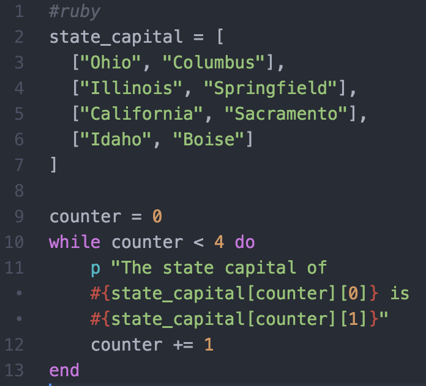
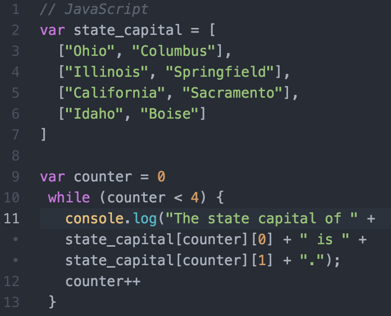

It's that time of the week again people. It's time for me to share with the interwebs the knowledge that I have just picked up this week! There so many differences (obviously, being different languages) but at the same time - you can do the same types of stuff. In Ruby some things are easier, like defining a variable. At the same time, some things are easier to do in JavaScript, like some looping mechanisms.
What is a looping mechanism?
Well a loop is pretty much when you do the same thing over and over again as defined by a set of parameters - so that your computer doesn't go into an infinite loop! Why would I want to use a loop? Let's say I had a list of the states (yes, all fifty of them) as well as their state capital cities and I wanted to print out something like, "The capital of Ohio is Columbus" for each and every state. Well you can write that sentence fifty times over and over, or you could take that list and iterate through each object in it - letting the loop do all the dirty work.
How could I do this in Ruby?

Alright. Let's look at that a little closer. First I make my list, I start my counter at zero and then I tel my 'while' loop to run as long as my counter value is less than 4. The counter value will also serve as my index value to call the right state.
Now how could I do this in JavaScript?

So basically the same type of deal going on here. As you can see there are grammatical changes but the output is the same. It will say "The capital of Ohio is Columbus" and then so on and so forth.